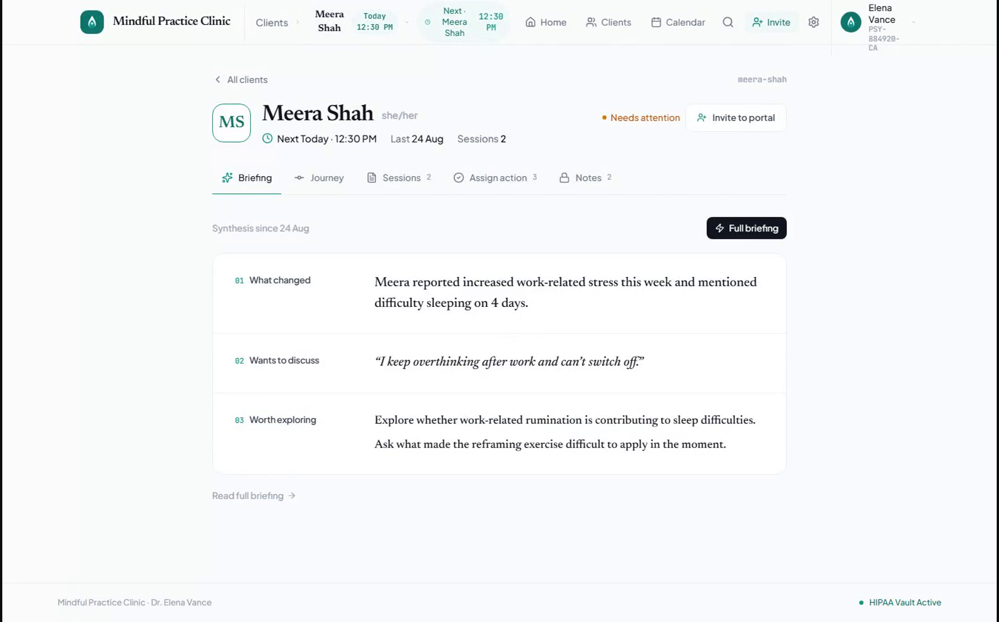
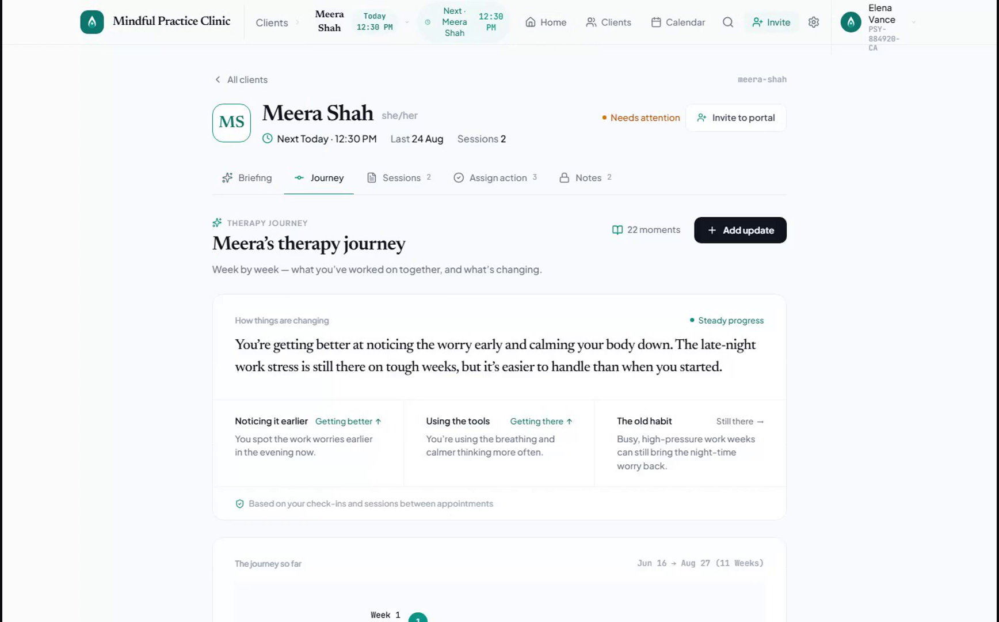
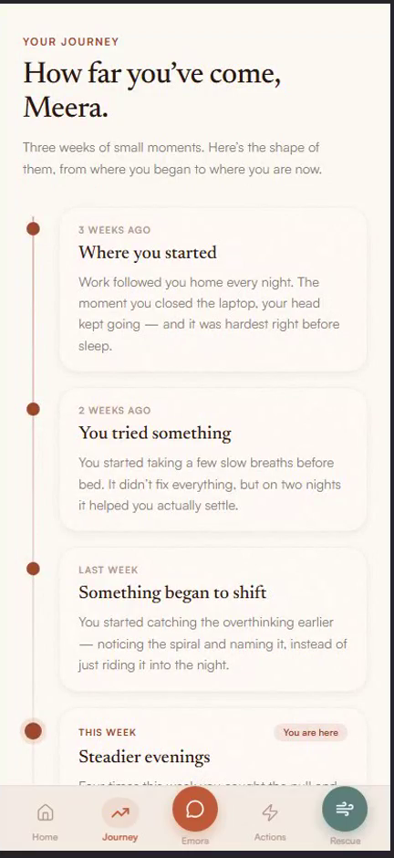
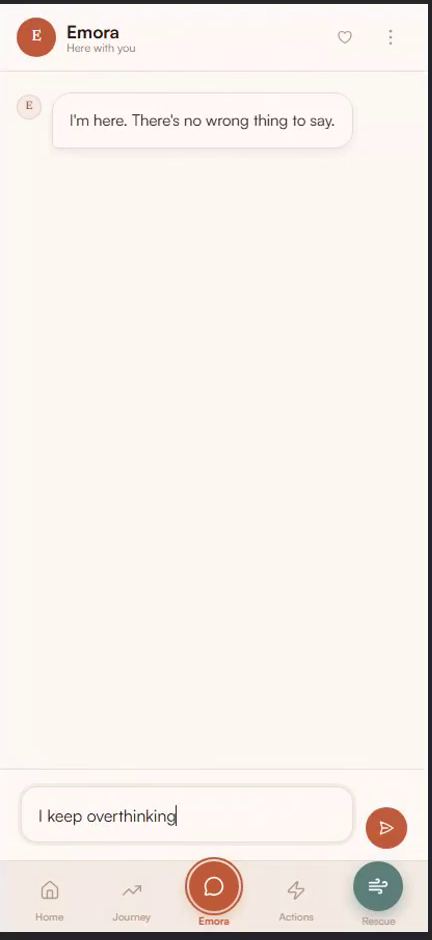
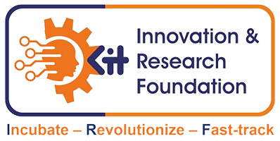

Continuity of care · Built for therapists
Unclinq helps therapists understand what happens between sessions, track the therapy journey, and support clients with AI-assisted continuity of care.
Built for therapists. Designed around the client journey.
A therapist may see a client for 45–60 minutes a week. But most of the client's emotional experiences, triggers, reflections, and attempts to apply therapeutic techniques happen between sessions.
Triggers, emotions, reflections and challenges happen where the therapist isn't — in the middle of an ordinary Tuesday.
Clients rely on WhatsApp, journals, notes and memory to piece together what actually happened that week.
Therapists need a concise, honest picture of what mattered — not fifteen minutes of catching up before the work can begin.
Unclinq connects these missing pieces.
Session transcript → between-session activity → AI analysis → therapist briefing → therapy journey. One continuous thread instead of a weekly reset.
The session generates structured context — key themes and moments.
Reflections, triggers and attempts to apply what was worked on.
Meaningful signals and patterns organised, not just transcribed.
A concise briefing of what mattered, ready before the next session.
The therapist starts where the client actually is — and it compounds over time.
The therapist stays in control of every step.
Not another dashboard to manage. A quieter way to carry context from one session to the next.
Capture and structure key insights from therapy sessions.
See what happened between sessions — triggers, reflections, patterns and how techniques were applied.
Receive a concise view of what mattered most before the next session.
Build a longitudinal view of the client's therapy journey over time.
A real walkthrough of the working product — the client's week between sessions, and the therapist's pre-session briefing and therapy journey.

Before the session. A concise briefing, ready automatically.

Over time. The therapy journey, week by week.
A transcript tells you what was said in a session. Unclinq aims to help therapists understand the journey between sessions — across three layers.
The same continuity, felt from the client's side — a calm, private way to stay in the work through the week.
Capture thoughts and experiences during the week, in their own words.
Notice emotions, triggers and patterns as they happen.
Access therapist-guided exercises and activities between sessions.
Bring the meaningful insights into the next session.

Your journey. In your own words.

A calm space. To reflect between sessions.
We spoke with therapists to understand what happens between sessions — and found a recurring gap in how client experiences are captured, remembered and brought into the next session.
"I need to know what happened during the week."
"I want a concise picture before the next session."
"I don't want another complicated dashboard."
These are paraphrased insights from our conversations with therapists, not verbatim quotes or endorsements.
Mental health conversations are deeply personal. Unclinq is being designed with privacy, security and responsible AI use at the core of the product.
Unclinq is designed to reduce information gaps and administrative burden — not to replace clinical judgment or the therapist–client relationship. Every insight is a starting point for the therapist, never a verdict.
Understand the client's week without spending hours reviewing fragmented information.
Reflect, practice and stay connected to the therapeutic process between sessions.
Build a more continuous and information-rich therapy experience across the practice.
Unclinq is currently working with therapists to validate and refine the workflow for AI-assisted continuity of care. We're inviting a small group of early partners to shape what we build next.
Become an early therapist partner →Join the therapist pilot, or reach out to see the product and where it's headed.
Built for therapists. Designed around the client journey.
Unclinq is built by HumanSenti Labs, a technology company focused on building responsible AI solutions for mental health and human wellbeing.
We're building technology that helps people and professionals stay connected to the context that matters.

KITIRF — KIT Innovation & Research Foundation